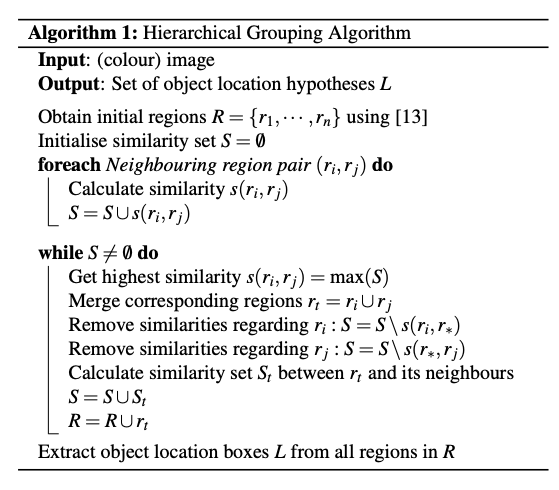
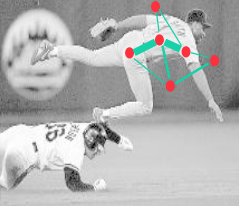
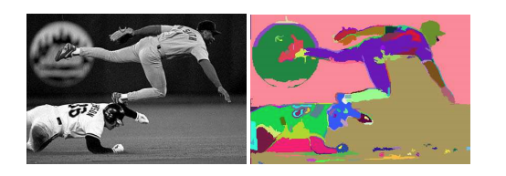
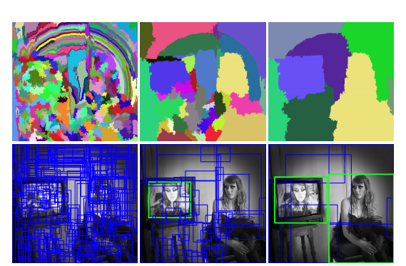
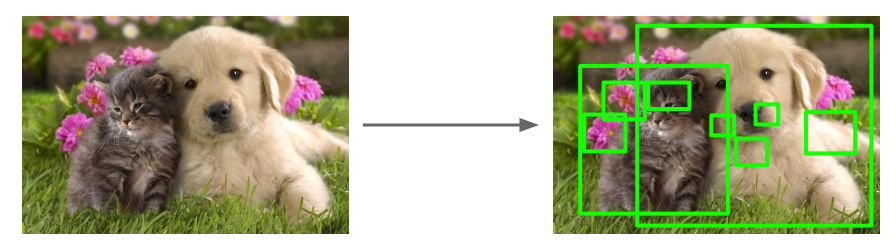
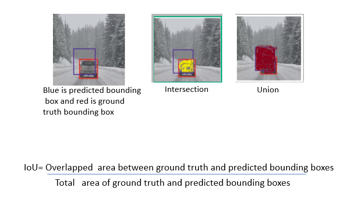
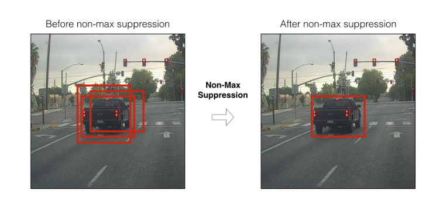
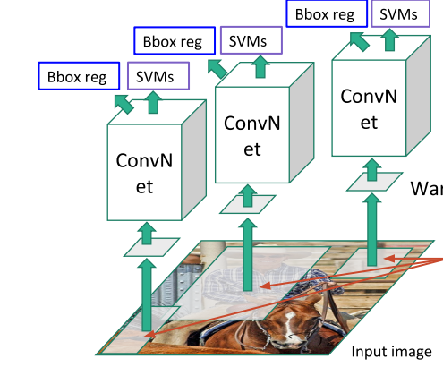
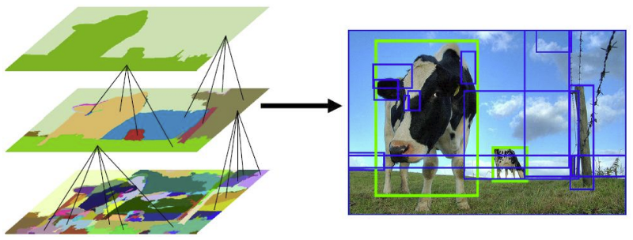

Region-CNN (RCNN) Object Detection
Contents
Region-CNN (RCNN) Object Detection#
Region Proposals#
We can think about the detection problem as a classification problem of all possible portions (windows/masks) of the input image since an object can be located at any position and scale in the image. It is natural to search therefore everywhere and an obvious method to generate region proposals, is to slide various width-height ratio windows slide around the image and using a metric to declare that the window contains one or more blob of pixels. Obviously, such method is computationally infeasible and we need think of how to reduce this number by having some means of gauging where to look in the image.
RCNN can accommodate a number of efficient algorithms that can produce region proposals. The baseline RCNN employs instead selective search via hierarchical grouping.

The algorithm contains another algorithm that segments the image into initial regions.
Graph-based segmentation#
We perform segmentation in the image using an efficient graph-based algorithm to obtain the set \(R=\{r_1, \dots, r_n \}\) of initial regions. The segmentation algorithm starts by formulating the image as a graph.
Let G = (V, E) be an undirected graph with vertices \(v_i \in V\) , the set of elements to be segmented, and edges \((v_i, v_j) ∈ E\) corresponding to pairs of neighboring vertices. Each edge has a corresponding weight \(w((v_i, v_j ))\), which is a non-negative measure of the dissimilarity between neighboring elements \(v_i\) and \(v_j\). In the case of image segmentation, the elements in V are pixels and the weight of an edge is some measure of the dissimilarity between the two pixels connected by that edge (e.g., the difference in intensity, color, motion, location or some other local attribute).
In the graph-based approach, a segmentation \(S\) is a partition of \(V\) into components such that each component (or region) \(C ∈ S\) corresponds to a connected component in a graph \(G' = (V, E')\), where \(E' ⊆ E\). In other words, any segmentation is induced by a subset of the edges in \(E\). There are different ways to measure the quality of a segmentation but in general we want the elements in a component to be similar, and elements in different components to be dissimilar. This means that edges between two vertices in the same component should have relatively low weights, and edges between vertices in different components should have higher weights.
For example, a pixel \(p_i\) corresponds to a vertex \(v_i\) and it has 8 neighboring pixels. We can define the weight to be the absolute value of the dissimilarity between the pixel intensity \(I(p_i)\) and its neighbors.
Before we compute the weights we use the 2D Gaussian kernel / filter we met in the [introductory section to CNNs - the end result being a smoothing of the image that helps with noise reduction. For color images we run the algorithm for each of the three channels.
There is one runtime parameter for the algorithm, which is the value of \(k\) that is used to compute the threshold function \(\tau\) . Recall we use the function \(τ(C) =k/|C|\) where \(|C|\) is the number of elements in C. Thus k effectively sets a scale of observation, in that a larger k causes a preference for larger components.
The graph algorithm can also accommodate dissimilarity weights between neighbors at a feature space rather at pixel level based on a Euclidean distance metric with other distance functions possible.
 Graph representation of the segmentation problem
Notice that the initial segments may be many and do not necessarily accurately represent distinct objects as shown below:
 Result of the initial segments produced by the graph-based algorithm, \(k=300\)
Grouping#
After the initial regions are produced, we use a greedy algorithm to iteratively group regions together. This is what gives the hierarchical in the name of the algorithm.
First the similarities between all neighboring regions are calculated. The two most similar regions are grouped together, and new similarities are calculated between the resulting region and its neighbors. The process of grouping the most similar regions is repeated until the whole image becomes a single region.
For the similarity \(s(r_i ,r_j)\) between region \(r_i\) and \(r_j\) we apply a variety of complementary measures under the constraint that they are fast to compute. In effect, this means that the similarities should be based on features that can be propagated through the hierarchy, i.e. when merging region \(r_i\) and \(r_j\) into \(r_t\), the features of region \(r_t\) need to be calculated from the features of \(r_i\) and \(r_j\) without accessing the image pixels. Such feature similarities include color, texture, size, fill - we create a binary sum of such individual similarities.
where \(a_i ∈ {0,1}\) denotes if the similarity measure is used or not.
The end result of the grouping is a hierarchy of regions ranked according to creation time. As earlier created regions may end up being the largest some permutation in the ranking is applied.
 Example of hierarchical grouping
The above selective search strategy is diversified (1) by using a variety of colour spaces with different invariance properties, (2) by using different similarity measures \(s(r_i, r_j)\), and (3) by varying our initial regions. Each strategy results in a different hierarchy and after a permutation that randomizes the ranking the final list of regions is produced. For RCNN we use 2000 such region proposals.
 Final proposals - in reality we have 2000 of such regions.
CNN Features and SVM Classification#
Each of these proposals can be fed into a CNN (e.g. ResNet. Since regions are of various rectangular shapes, we warp the regions to a fixed size (CNNs can process fixed input tensors) of 227 x 227 pixels and the CNN produces a 4096-dim feature vector from each of the regions. Note that this representation of each region by 4096 elements is considered quite compact and more importantly the features are shared across classes.
Using these features we use a binary SVM classifier that produces a positive or negative on whether this feature contains the class of interest or not. We train a separate binary SVM classifier per class (binary classification).
The sharing of features allows us to practically aggregate into a matrix all features of all regions (2000 x 4096) we well as aggregate the SVM weights into another matrix (4096 x K), where K is the number of classes we have trained for, and do this combined operation via a matrix-matrix product.
After the scoring of each proposed region by the SVM we apply a greedy Non-Maximum Suppression (NMS) algorithm for each class independently, that rejects a region if it has an Intersection over Union (IoU) metric higher than a threshold with a higher scoring region. This threshold was empirically determined to be 0.3 for the task outlined in the paper. But it is expected to be a hyperparameter in practice.
Finally, a bounding box regressor, predicts the location of the bounding boxes using the proposal boxes and nearby ground truth box data so that we can adjust the final detection box and avoid situations that whole objects are detected but partially included in the detection box.


The whole process is partially shown below and the solution is called Region-CNN (RCNN).
 RCNN pipeline
 RCNN detection result after processing multiple region proposals
Training#
RCNN training is complex as involves a multi-stage pipeline.
R-CNN first fine pretrains a CNN on a classification task without using any bounding box ground truth.
It then adapts the trained CNN by replacing the classification layer with another randomly initialized layer of span K+1, where K are the number of classes in the domain of interest (+1 is due to the fact that we consider the background). We continue training with SGD using (a) as inputs the warped images as determined by the region proposals (b) using this time the ground truth bounding boxes and declaring each region proposal with IoU ? 0.5 relative to the ground truth bounding box as true positive.
Then, it fits SVMs to CNN features. These SVMs act as object detectors, replacing the softmax classifier learnt by fine-tuning.